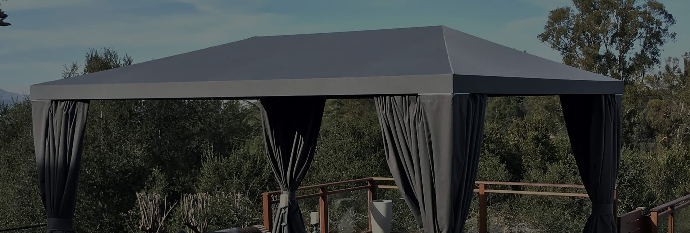

-
COMMERCIAL &
NEW CONSTRUCTIONWhether you're a General Contractor doing a tenant improvement
or abusiness owner who desires to open a new location and wants
to be seen, we can work with you to get your name out on the street. -
 COMMERCIAL &
COMMERCIAL &
RESIDENTIAL RECOVERSIf you have an existing awning frame and would like to recover it in
new fabric please contact us, we can breath new life into your project
transforming your storefront or residence to its original luster or we
can work with to change the whole appearance. -
COMMERCIAL BRANDINGLet our full service graphics team members offer a
seamless transition from quotation to project completion.
Bringing you and your clients a simple solution to a
sometimes difficult and confusing process. -
 NOW SERVING EAST BAY CITIES INPiedmont, Orinda, Moraga, Lafayette, Oakland Montclair, Hayward,
NOW SERVING EAST BAY CITIES INPiedmont, Orinda, Moraga, Lafayette, Oakland Montclair, Hayward,
Fremont, Danville, Dublin, San Ramon, Alamo, & Black Hawk -
ALSO SERVING THE PENINSULAIncluding Redwood City, Menlo Park, Palo Alto, Atherton, Portola, & San Mateo
-
CUSTOM RESIDENTIAL PROJECTSWe have no preconceived notion of what you believe the prefect awning
looks like but together with our sample gallery and fabric selection samples
we can collaborate to make you're a dream project a reality. -
 RETRACTABLE AWNINGS &
RETRACTABLE AWNINGS &
SOLAR SCREEN PRODUCTSWe have varied array of retractable awning and solar screen product to help
you beet the sun. To add additional footage to a sun beaten back patio or to
block sunlight to entering a window or a patio sliding glass door, we have a
affordable solution in mind just for you. -
CUSTOM SPEAR POINT &
BALL POINT AWNINGSThe timeless beauty of this custom type of awning creates a sophisticated
design to complement your home or business architecture. Spear point
awnings add a European elegance to any area but also creates a nice
shaded area to entertain guest. Many historic and art districts in California
prefer the old world style of a spear point awning. -

CUSTOM POOL SIDE CABANASDistinctive design, use of color and maximum comfort are hallmarks of
Sunset Canvas & Awning. These incredible cabanas transform any outdoor
space into an intimate dining or lounging experience. You can enjoy your
cabana day and night for years to come. -
 CUSTOM FABRIC CANOPIESSunset Canvas & Awning, is a leader in fabricating quality custom canopies,
CUSTOM FABRIC CANOPIESSunset Canvas & Awning, is a leader in fabricating quality custom canopies,
pool side cabanas. We make custom, durable products made to your
specifications at a reasonable price. Including fully functional privacy curtains
and screens
PROJECTS

COMMERCIAL AWNINGS
Some would say that a business is only as good as the commercial awnings that adorn that business' offices or manufacturing facilities. Those people probably work at Sunset Canvas & Awning but it's possible we're a little biased.
Sunset Canvas & Awning works with your architect closely to ensure a eye catching Awning design.
View Details
RESIDENTIAL AWNINGS
Add that extra accent to your home with striking awnings!
Residential awnings for your home can transform a simple window from an essential, if lackluster, aspect of home design to an integral part of your home's decor that adds elegance and visual impact to the overall look.
View Details
PRODUCTS

FIXED AWNINGS
A fixed awning is perfect solution for any window, door, deck, patio or balcony where protection from the sun and rain is desired.
Fixed frame awnings can be fabricated into many shapes and sizes to create a custom look for your home or business.
View Details

FREE-STANDING CANOPIES/CABANAS
Sunset Canvas & Awning is known for creating eye catching residential or commercial patio and pool side canopies and cabanas.
Whether you’re remodeling your home or backyard with a new canopy or cabana from Sunset Canvas & Awning.
View Details

RETRACTABLE PATIOS
Sometimes you feel like some sun, sometimes you don’t.
A retractable awning provides all the same advantages of a traditional awning, but it also gives you the option of choosing if and when you want to use it.
This makes it great for sudden afternoon showers or the sweltering summer sun, which are so common here in the Bay Area.
View Details
RETRACTABLE WINDOWS
A retractable window awning from is the recommended solution for complete solar control and privacy in your home.
The awnings can be lowered to any position to provide as little or as much sunlight as you want. With traditional awning flair, this modern mechanism is easy to operate, and eliminates seasonal removal and storage.
View Details
SHADE SAILS
Shade sails or commonly referred to as tension structure are heavy-duty fabrics that filter out certain amounts of sun, depending on the specific use of the area to be shaded.
Energy saving and environmental protection, making a restful, shady spot and unique vibrant style in your outdoor living areas.
View Details
SOLAR SCREEN SHADES
Exterior screens are multifunctional and retractable for use when you desire privacy and sun or insect screen protection.
Combining pleasing aesthetics with advanced technology to increase the privacy of your home and create a comfortable, beautiful living environment.
View Details
BACK-LIT AWNINGS
Backlit awnings combine the charm and flexibility of fabric with the high visibility of a sign, providing round the clock identification to storefronts, shopping malls, theaters, restaurants, hotels, anywhere you want to attract public attention.
Backlit awnings can be designed to accentuate any building, outside or inside.
View Details
SPEAR POINT & BALL POINT
The timeless beauty of this custom type of awning creates a sophisticated design to complement your home or business architecture.
Spear point awnings add a European elegance to any area but also creates a nice shaded area to entertain guest.
View Details
METAL AWNINGS
With Sunset Canvas & Awning you can create an architectural statement with distinctive, louvered, standing seam or metal awnings and canopies.
All-metal designs communicate your character and style while providing energy saving protection from the elements.
View Details
ARCADIA LOUVERED PERGOLA
The Arcadia system is very unique as it has louvers that can adjust in either direction this is critical as the sun is always changing positions throughout the day. With a remote control you can change the position of the louvers a few degrees to create the perfect amount of shade.
Our systems are designed for residential and or commercial applications and is also made to integrate with existing systems.
View Details
INFINITY CANOPY SYSTEM
The Infinity Canopy system is a slide on wire canopy. Its modular design allows it to adapt to any space, be configured in one or multiple colors, and change within minutes to create new designs and patterns even on existing pergolas or existing structures.
Infinity Canopy can easily be installed on pergolas, between two opposing structures, on free-standing structures/beams, etc.
View DetailsSHADE FABRICS
Design wide open. Seeing an outdoor space for what it can be means taking inspiration from the scene around it. Pick up on color cues to create seamless transitions from home to horizon. And seasonal changes may beg for some refreshing twists.
See our Custom Solid Fabric Selections exclusive to Sunset Canvas Awning!
See our Custom Striped Fabric Selections exclusive to Sunset Canvas Awning!
Style the shade to enhance and romance. Shade is sunlight’s creative complement and using it to stylish effect means choosing just the right shade solution. Whether you choose to design using a fixed or retractable awning, pergola, shade sail, roller shade or umbrella, you’ll artfully expand your living space and create a functional transition between indoors and out.
VENDORS
ABOUT
Greg Parr began custom canvas related work in the Navy as a Parachute Rigger beginning in the late 1970’s through to 1988.
He had also apprentice as a Sail maker in Hawaii leaning awning fabrication, installation & management along the way.
Greg started his first Sunset Canvas in a garage with one sewing machine in Mailii Beach Hawaii, the skills and love of his craft and a desire to deliver only the best.
The business eventually relocated in the Bay Area and has become a South Bay benchmark for quality and competitive pricing.
After establishing a leadership role in awning design & fabrication in Hawaii where the Sun Wind & Salt Water are to the extreme we brought our talents and knowledge to the Bay Area.
Our determination to stay at the forefront in awning and canopy design, quality and delivery remains our true course.

WHAT OTHER SAY ABOUT US
Ashok C.
These guys are unbelievably good at installing awnings. They installed a motorized sunsetter awning XL 14 ft for me. They gave a competitive quote, were more highly qualified than the others who gave similar quotes and provided excellent customer service. They even came back a second time to help with my awning, without charging me.
I give them my highest recommendation on being awning installation EXPERTS and providing outstanding customer service.
Carole H.
This company was very professional, communicative, on time and responded to all of my questions and concerns. The end product is wonderful for our hot and sunny backyard area here in the tri-valley. I enjoy the shade it provides, as well as the pretty sky above at night and on less than hot days.
Jolene G.
Great professional work. Order came on time as promised and installed professionally as promised. Easy to work with and wonderful professionalism.
Kristine G.
I just had a wonderful experience with Sunset Canvas & Awning. I contacted several awning companies to custom make an awning for our flooring store, Lawrence Flooring & Interiors. After contacting 3 awning companies, Sunset Canvas & Awning outshined all the others in terms of response, knowledge, service, quality and competitive pricing. I was completely in awe every step of the way with this professional company and their customer service. The technician that came out to look at our site was Greg Parr. He was fantastic and was very knowledgeable, efficient and helped me understand my options. Every time I called with a question, Greg immediately got back to me with complete answers. Acme got our awning done in less time than expected and it turned out beautifully! Very good quality Sunbrella material and the workmanship was top notch. It was such a refreshing experience working with Acme Sunshades. I highly recommend them to homeowners and business owners alike.
Valetina E.
I had Greg come out and measure for my daughters home in San Jose for fixed window awnings and a retractable awning. He measured up an showed me fabric samples and fixed awning frame samples photos and we designed three custom spear point awnings together.
The design process is Super Simple when Greg guides you through the steps, he covers everything. And he mailed me a quotation the very next day, it was a few dollars more than the other bids I had gotten but I felt that is was worth it due to the fact that my awnings were to be custom one of a kind not just some average looking awning that the competitors were offering. The day of the installation came and due to our busy schedules we weren't available on a Saturday but Greg came through and met our schedule and installed on a Saturday at no extra charge.
When the installation was complete it was exactly like he described them how they would look like every detail was taken into consideration. The retractable came with a lifetime warranty, no other vender had this type of warranty not even close. I will have Greg come out to my home in Portola Valley Next as we have some areas that require some attention due to late after noon sun issues.
I will most definitely use Greg again.
Marshall B.
Sunset Canvas & Awning installed five awnings above the doors to our building. We couldn't be more happy with the way they turned out! The awnings help keep rain from our entryways and provide shade in the summer. The awnings are made from durable material and look great!
CONTACT US
Greg will email you back within 24 hours to schedule a phone consultation!
Address
Santa Clara, CA 95050
Phone numbers
South Bay: (408) 857-3488
East Bay: (510) 838-0154
East Contra Costa County: (925) 308-5892
E-mail address
info@sunsetcanvasawning.com
Recent Work Gallery
Sunset Canvas Awning © All Rights Reserved 2019